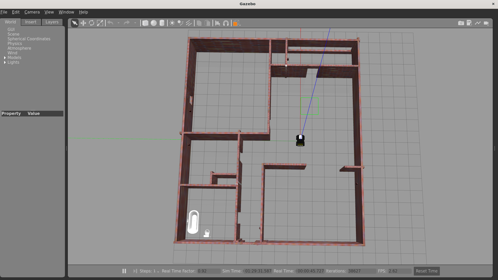
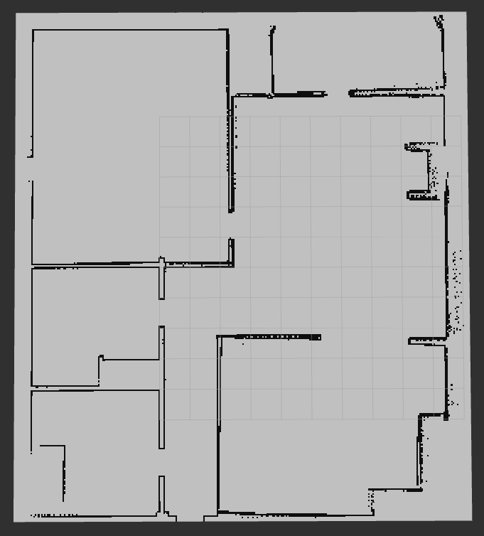
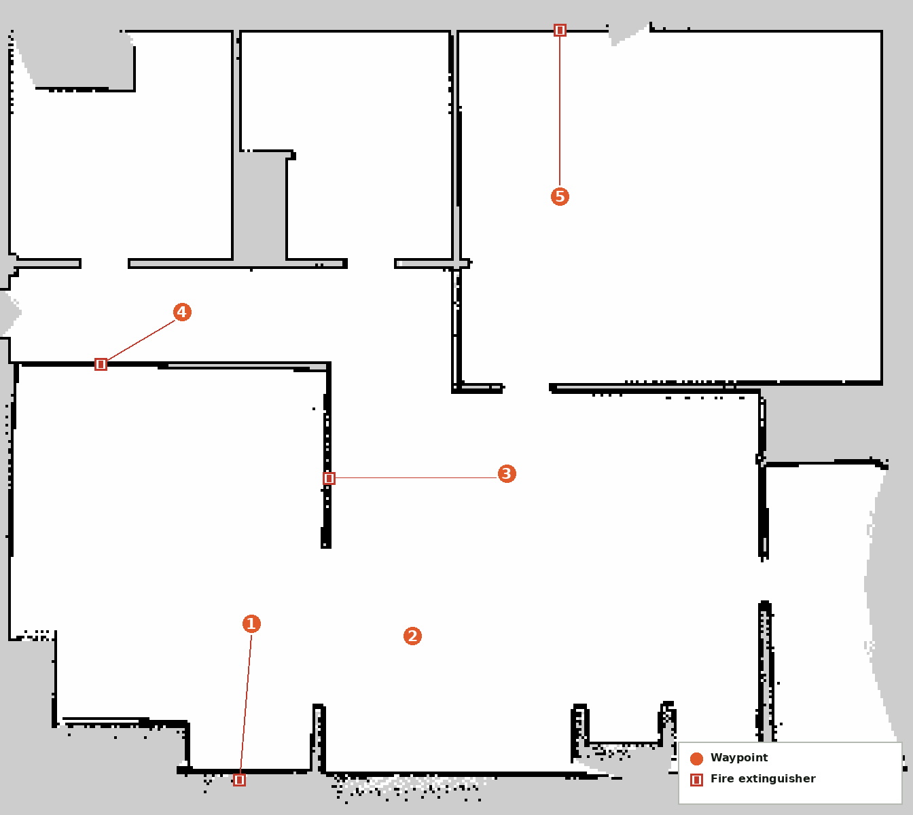

A simulation-first inspection stack for the Clearpath Husky UGV, built incrementally on top of the upstream Clearpath ROS2 packages: navigation and localization first, then a behavior-tree-driven multi-waypoint mission system, then AI-based inspection. A YOLO fire-extinguisher detector now runs at every waypoint during each mission, flagging it as found or missing in an auto-generated report — all launchable and controllable from a FastAPI + web dashboard with live teleop and mission telemetry.
A custom construction-site world in Gazebo, localized against a SLAM-built occupancy map. Five inspection waypoints are recorded on the map, each aligned to a wall-mounted fire extinguisher the robot checks for during a mission — Point 2 currently reports missing.



A single /start_mission_sequence service call drives a behavior tree that loops this sequence per waypoint.
image_capture_service grabs an image at the waypointyolo_fire_extinguisher_node flags found/missing per pointBrowser dashboard, FastAPI bridge, mission behavior tree, and simulated Husky communicate over REST, WebSockets, and ROS2 topics/services.
| Package | Role |
|---|---|
| husky_gazebo | Custom construction-site Gazebo world and simulation bring-up |
| husky_nav2 / husky_navigation | Nav2 maps, parameters, and configuration for AMCL localization and path planning |
| husky_init_pose | Automatic initial pose node — sets AMCL's starting pose without manual RViz input |
| husky_waypoint_recorder | Waypoint recording via RViz and single-point go_to_waypoint navigation |
| husky_mission_interface | Mission entry point — exposes /start_mission, /start_mission_sequence, and cancel services |
| husky_mission_bt | BehaviorTree.CPP mission runner — loops navigate → inspect → report per waypoint until the sequence finishes |
| husky_vision_detector | YOLO-based fire-extinguisher detection, run per waypoint during inspection |
| husky_msgs | Shared messages/services — MissionGoal, MissionResult, StartMissionSequence |
| husky_dashboard | FastAPI backend + web frontend — mission control, teleop, image capture, and report browsing |
| husky_base / husky_control / husky_description / husky_simulator / husky_viz | Upstream Clearpath Husky ROS2 packages this project builds on |
husky_mission_bt loops navigate → inspect → publish-result per waypoint via BehaviorTree.CPP, driven by husky_mission_interface's /start_mission_sequence service — giving the mission a cancellable, resumable structure instead of a single blocking function.husky_vision_detector) and image_capture_service run as a separate inspection step the BT calls at each waypoint, keeping detection swappable independently of the navigation/mission stack.mission_results against the expected waypoint count; once they match, it fires an internal report generator that fills an HTML template with per-point images and found/missing status — no manual "generate report" step needed./cmd_vel for low latency, while lower-frequency actions (go-to-goal, capture, start/stop mission) use simple REST calls — matched to how often each actually needs to fire.The exact dashboard UI from the real robot, running against a simulated backend in your browser — drive the virtual joystick, queue up waypoints, run an autonomous mission, and open the auto-generated inspection report.
⚠️ Simulated data — no live robot connected on this page.ROS2 workspace, FastAPI backend, and dashboard frontend.
💻 View on GitHub 🚀 Launch Live Demo ← Back to Projects